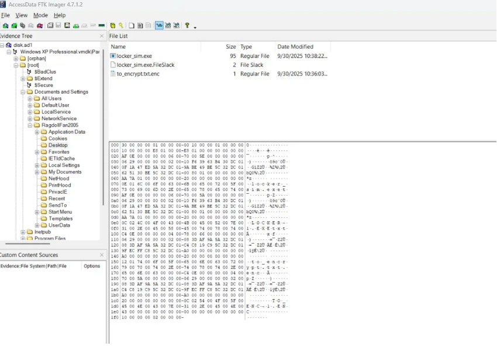

Challenge Scenario
Description: My friend told me to run this executable, but it turns out he just wanted to encrypt my precious file. And to make things worse, I don't even remember what password I used. 😥 Good thing I have this memory capture taken at a very convenient moment, right?
Initial Investigation
Discovering the Files
Examining the desktop, we find two critical files:
•
locker_sim.exe - The encryption executable•
to_encrypt.txt.enc - The encrypted file
The executable is written in C, so we can use IDA Pro to analyze its functionality and understand the encryption mechanism.
Reverse Engineering the Executable
Using IDA Pro, we decompile the executable and analyze the main function. Here's the complete decompiled code:
Step-by-step Analysis of the Encryption Process
The executable performs the following operations:
argv[1] (the password)2. Reads the computer name from registry or defaults to
UNKNOWN_HOST3. Reads a file called
secret_part.txt (then deletes it afterward!)4. Combines these into one string:
<argv[1]>|<COMPUTERNAME>|<secret_part_contents>or if no secret part:
<argv[1]>|<COMPUTERNAME>|5. Computes SHA256:
sha256_buf(pbData, v5, v16)So
v16 = SHA256 hash of the combined string6. Creates the AES-256 key:
Copies the first 32 bytes (256 bits) of the SHA256 hash into
v12, v13, v14, v157. Encrypts the file
to_encrypt.txt using:aes256_encrypt_simple((int)v16, v12, Src, v9, (int)&v8, (int)&ElementCount)and writes the result as
to_encrypt.txt.enc
argv[1]- The command-line argument (password)COMPUTERNAME- The hostname- Content of
secret_part.txt(the deleted file)
Memory Forensics with Volatility
Finding the Command-Line Argument (Password)
Using Volatility's consoles plugin, we can extract the command history to find how the executable was run:
hmmisitreallyts
Finding the Computer Name (Hostname)
Using the envars plugin to extract environment variables and locate the computer name:
RAGDOLLF-F9AC5A
Recovering the Deleted File
The last piece is the content of secret_part.txt which was deleted. Since it was deleted, we can check the Recycle Bin:
sigmadroid
Perfect! We now have all three components needed for decryption.
Decryption & Flag Extraction
Writing the Decryption Script
Now that we have all the components, we can write a Python script to decrypt the file:
Extracting the Flag
After running the decryption script, we get the output:
This appears to be Base64 encoded. Let's decode it:
Challenge solved! The flag references the forensics techniques used: screen capture (memory dump), registry analysis, and MFT (Master File Table) for file recovery.
Investigation Summary
3
Key Components
2
Artifacts Analyzed
AES-256
Encryption Type
SHA256
Hash Function
Tools & Techniques
Reverse Engineering
- IDA Pro
- Static Analysis
Memory Forensics
- Volatility Framework
- consoles plugin
- envars plugin
Disk Forensics
- Recycle Bin Analysis
- File Recovery
Cryptography
- Python PyCryptodome
- AES Decryption
- Base64 Decoding
Explore More Challenges
Check out other forensics writeups from Securinets CTF 2025.